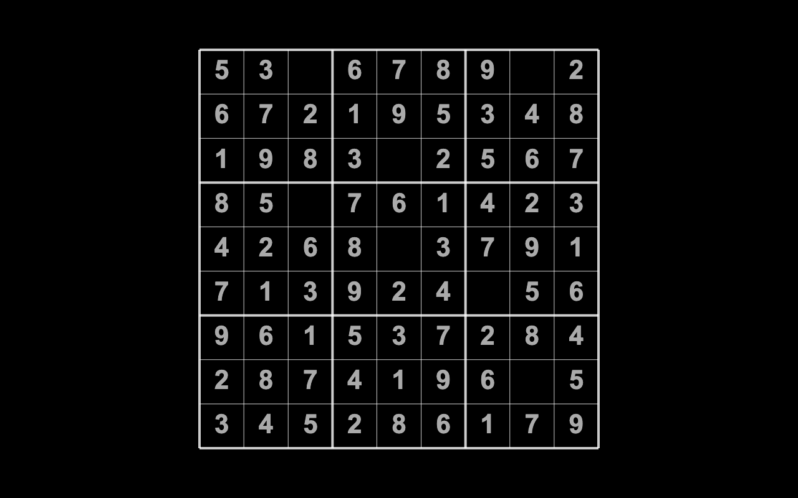
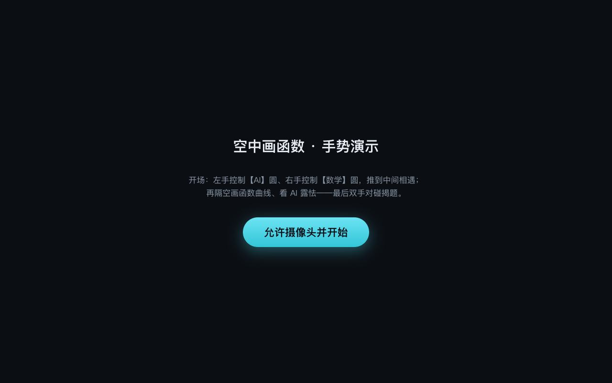
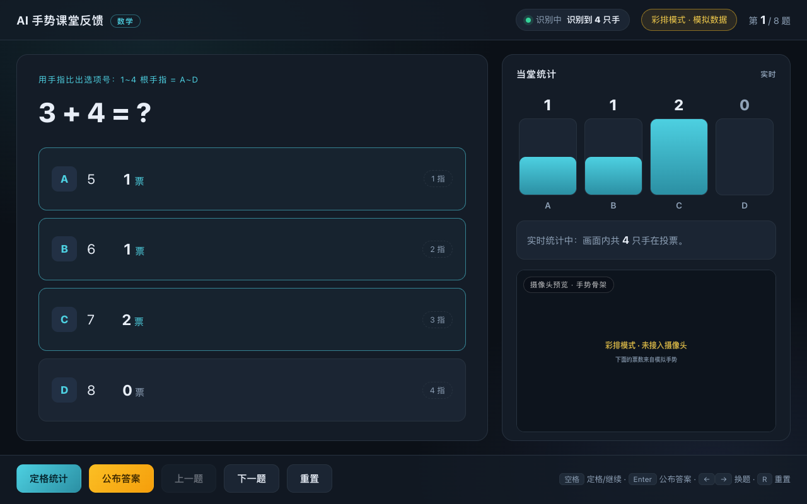
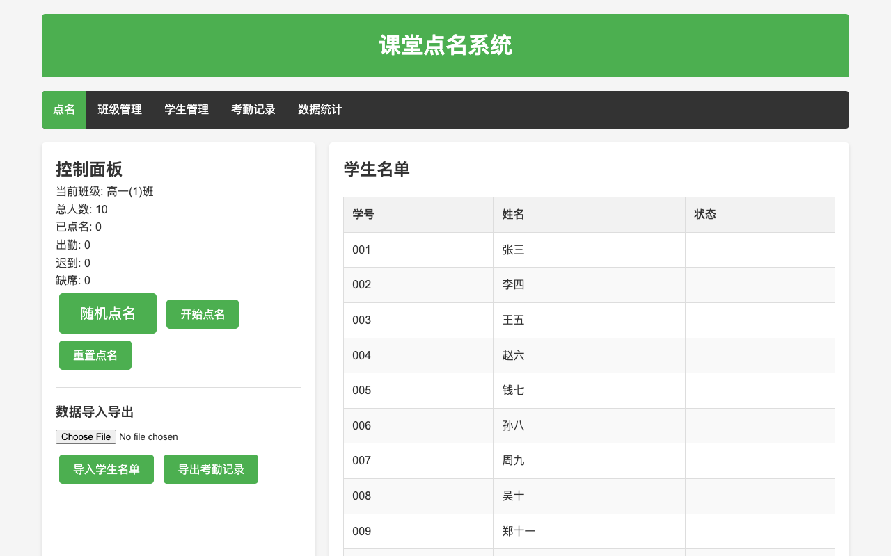
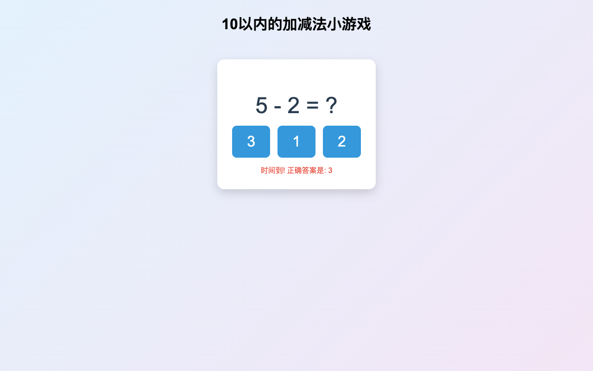
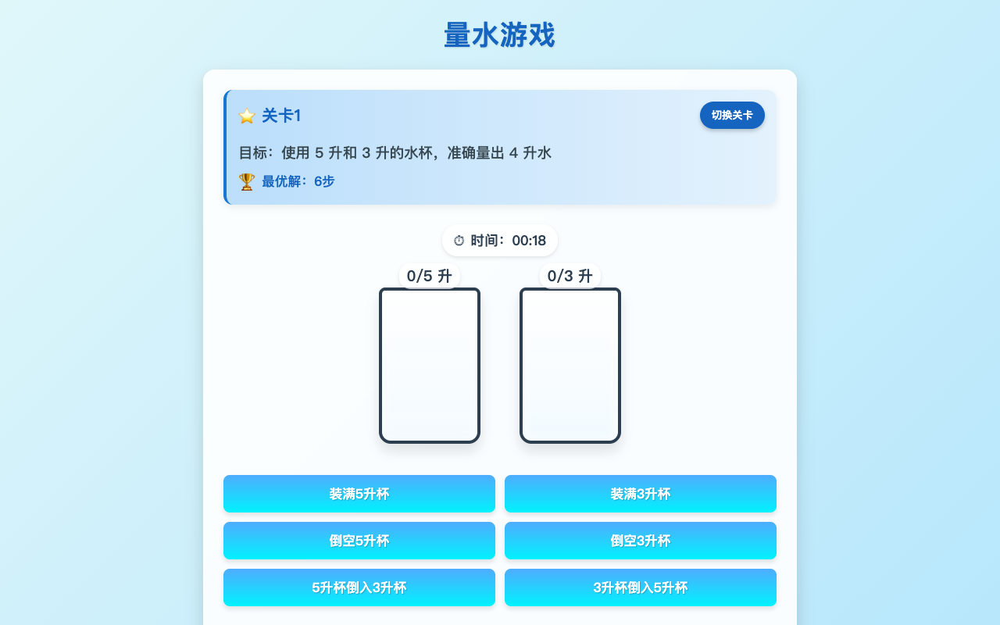

需要摄像头手势互动
隔空手势识别演示，需授权摄像头

需要摄像头空中画函数 · 手势演示
报告《人工智能赋能数学教育教学的实践路径》开场：左手控 AI、右手控数学， 双圆相遇后隔空画抛物线，AI 实时拟合出解析式与 R²，并以"露怯"环节与双手对碰揭题收尾。

需要摄像头AI 手势课堂反馈 · 数学
当堂即时反馈：老师投出选择题，学生用手指比出选项号 （1~4 根手指 = A~D），屏幕实时统计全班答案分布， 可定格本轮、公布答案看正确率。内置 8 道小学数学题。
课堂工具
课堂上随手就能用的互动小工具

课堂工具课堂点名系统
随机点名与顺序点名，逐条记录出勤 / 迟到 / 缺席； 支持 CSV 学生名单导入、考勤记录导出，数据自动保存在浏览器本地。

课堂工具10 以内加减法小游戏
随机出题、限时作答的小学口算练习，答对答错即时变色反馈， 适合低年级课堂热身或随堂练习。

课堂工具量水游戏
用几只固定容量的水壶倒来倒去，量出目标水量。 关卡式设计，训练逻辑推理与数学思维，含倒水音效。
需本机服务
启点 · DeepSeek 学习诊所
拍下错题照片，AI 识别题干后由你核对确认，再带着原图做启发式追问辅导； 另含一元一次方程的本地诊断与本机错题本。
怎么打开
先在本机 qidian/ 目录运行 npm run dev，再点上面标题进入；纯静态托管时只有本地方程练习可用。
学科演示
历史、地理与科学主题的可视化课件
🔍
没有匹配的站点，换个关键词试试。